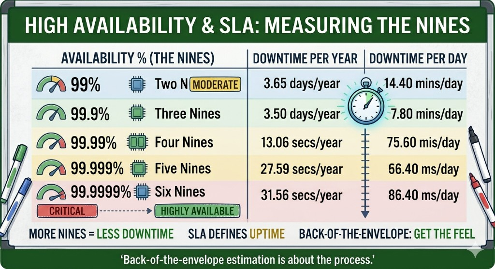

في إنترفيوهات الـ System Design بشركات زي Google أو Meta، غالباً هتتسأل سؤال زي: "صمّم تويتر"، وأول خطوة بتبين إنك مهندس شاطر هي إنك تعمل Back-of-the-envelope estimation.
يعني إيه؟
هي حسابات سريعة (تقديرية) بتساعدك تقرر التصميم بتاعك هيمشي إزاي. محتاج Database واحدة؟ ولا محتاج Sharding؟ الـ Cache هيكفي؟
ثوابت لازم تكون في دماغك
١️⃣ قوة الرقم 2 (Powers of Two)
لازم تبقى عارف التحويلات بسرعة. الـ 1GB مش مجرد رقم، هو 230 بايت. طلب مليون request فيه بايت واحد لكل request ≈ 1 MB. 1 PB (Petabyte) = 1000 TB.
٢️⃣ أرقام الـ Latency (اللي كل مبرمج لازم يعرفها)

- الـ Memory مرجع سريع جداً (حوالي 100 ns).
- الـ Disk seek بطيء جداً مقارنة بيها (حوالي 10 ms).
- الخلاصة: حاول دايماً تقلّل الـ Disk I/O وتعتمد على الـ Caching والـ Sequential reads.
٣️⃣ قاعدة الـ Availability (الـ nines)

لما حد يقولك الـ Availability "أربع تسعات" (99.99٪)، ده معناه إن السيستم مسموح له يقع حوالي 52 دقيقة في السنة كلها (تقريباً).
💡 مثال عملي (تويتر)
لو عندنا 300 مليون مستخدم، و 50٪ منهم نشطين يومياً (150M DAU)، وكل واحد كتب تويتين في اليوم:
150M × 2 = 300M تويتة يومياً.
QPS (Queries Per Second): 300M ÷ 86,400 ثانية ≈ 3,500 تويتة في الثانية.
Storage: لو 10٪ من التويتات فيها صور (حجم الصورة 1 MB): 30M صورة × 1 MB = 30 TB يومياً! يعني في 5 سنين محتاج حوالي 55 PB.
🚀 نصيحة للإنترفيو
- قرب الأرقام (Round numbers): مش لازم تقول 86,400 ثانية في اليوم؛ ممكن تقول 100,000 لتسهيل الحساب. المهم المنطق.
- وضّح افتراضاتك: قول "أنا هفترض إن المستخدم بيفتح الأبلكيشن 3 مرات".
- اكتب الوحدات: متقولش 5 وتسكت — قول 5 KB ولا 5 MB؟
الهدف من الحسابات دي مش إنك تبقى آلة حاسبة؛ الهدف إنك تثبت إنك مهندس يعتمد على البيانات وعارف السيستم بتاعك هيشيل إيه.